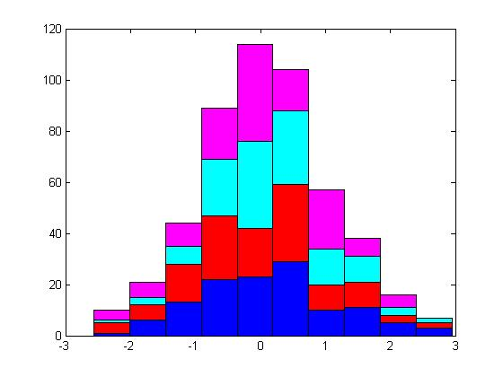
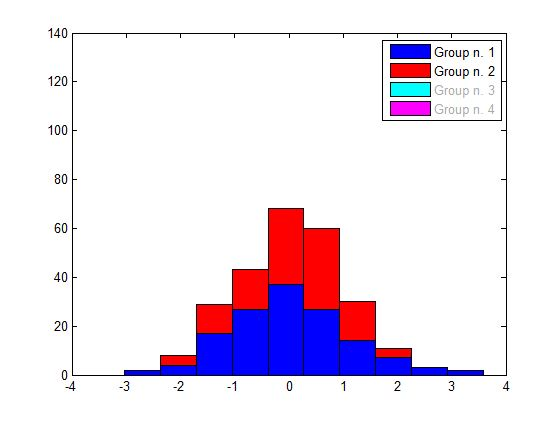

| Flexible Statistics Data Analysis Toolbox™ |
|
histFS plots a histogram with the elements in each bin grouped according to a vector of labels.
[ng, hb] = histFS(y,nbins,gy)
[ng, hb] = histFS(y,nbins,gy,gylab)
[ng, hb] = histFS(y,nbins,gy,gylab,ax)
[ng, hb] = histFS(y,nbins,gy,gylab,ax,barcolors)
histFS extends MATLAB function hist to the case where data y (a vector of n elements) are grouped in each of nbins predefined bins according to a numeric vector gy consisting of n identifiers for the groups of each element in y. If there are k groups in y, then unique(gy) = k.
histFS returns in output variable ng a matrix with a column for each group and a row for each bin. In ng, the column i contains the the number of elements of group i in each bin.
The second output of histFS is a vector hb with the handles to the barseries objects.
histFS can be called with optional arguments.
Plot obtained on a dataset with four random groups, without optional input:
y = randn(500,1);
% three groups
groups = randi(4,500,1);
% number of bins
nbins = 10;
[ng, hb] = histFS(y,nbins,groups);

Now with default clickable legends: the plot shows the result of a mouse click operated by the user on the last two legends:
[ng, hb] = histFS(y,nbins,groups,{});

Now with personalised clickable legends:
myleg = {'my group 1' 'my group 2' 'my group 3' 'my group 4'};
[ng, hb] = histFS(y,nbins,groups,myleg);

Try the following code to apply to the grouped histogram the legends of a different plot, e.g. a scatterplot.
hs = gscatter(1:numel(y),y,groups); % e.g. a scatterplot
hfs = gcf; % get the handle of the scatterplot
has = get(hfs,'CurrentAxes'); % it is the same as has = gca
hlegends = get(has,'Children'); % get the legend entries
getleg = get(hlegends,'DisplayName'); % get the names of the legend entries
getcol = get(hlegends,'Color'); % get the color of the legend entries
getcolm = cell2mat(getcol); % arrange the RGB vectors into a matrix
figure;
[ng, hb] = histFS(y,nbins,groups,getleg,gca,getcolm);
|
|
hipwei.html | hypbdp.html |
|